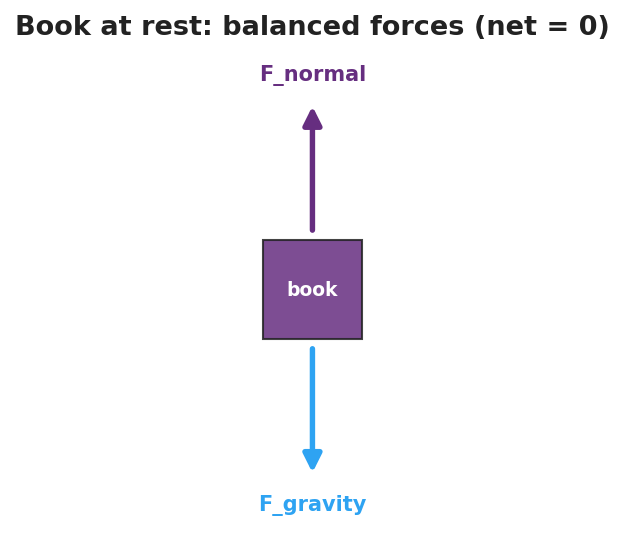

Unit: Forces — Lesson 01: Newton's First Law and Inertia
Phenomenon
Your teacher sets a stack of empty cups on a smooth cloth at the edge of the table, then yanks the cloth straight out — fast and level. The cups barely move; they stay almost exactly where they were. In a clip from the International Space Station, an astronaut lets go of a floating tool and it just hangs there, motionless, in mid-air.
Watch the cups, not the hand. The cloth is gone in an instant, yet the cups stay put.
Driving Question
What decides whether an object's motion changes or stays the same?
Notice & Wonder
Watch the tablecloth pull and the floating ISS tool. Write two things you notice and two things you wonder. Use the word motion in at least one line.
Initial Model
Draw the cup sitting on the cloth. Draw an arrow for every push or pull acting on the cup while the cloth is yanked out from under it. Then write one sentence predicting whether the cup speeds up, slows down, or stays the same — and why.
Investigate
A box sits on a frictionless floor. Two people pull on it from opposite sides. Use the sliders to set each pull. The simulator adds the forces as vectors, shows the net force, and tells you whether the box accelerates or stays at constant velocity. When are the forces balanced?
Net force: 0 N · The box: stays at constant velocity (balanced)
The free-body diagram below shows the same balanced-force idea for a book resting on a table — gravity down, normal force up, net force zero.

Make It Make Sense
- A book lies still on a table. Gravity pulls it down. What second force acts on it, and why doesn't the book move?
- Two students push a box from opposite sides with equal force. What is the net force, and what does the box do?
- Why is it harder to get a fully loaded backpack moving than an empty one?
Stuck? Sentence frame
"The ___ stayed / kept moving because the net force was ___, so its motion did not ___."
Key Vocabulary (max 3)
- inertia — an object's tendency to resist a change in its motion; more mass means more inertia
- net force — the single force equivalent to all the forces on an object added together (as vectors)
- balanced forces — forces whose net force is zero, so the object's motion does not change
Revise Your Model
Return to your cup drawing. Were the sideways forces on the cup balanced or unbalanced while the cloth slid underneath it? Re-label the arrows and rewrite your explanation in one sentence using inertia and net force.
Return to the Phenomenon
Why does a seatbelt matter the instant a car stops short? Answer in one sentence using inertia: your body keeps moving forward because the sudden stop acted on the car, not yet on you — until the belt supplies the force that changes your motion.
Exit Ticket + Closing Reflection
- A hockey puck slides across the ice at a steady speed in a straight line.
(a) What is the net force on the puck? Explain. (b) Name the force that eventually slows it down. (c) On a frictionless rink with no air, what would the puck do? Why? - Reflection: What is one thing today that changed how you think? Who helped you make sense of it?